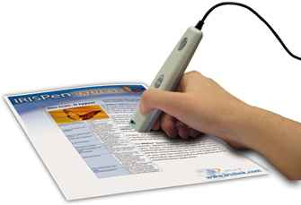
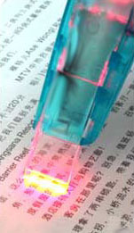
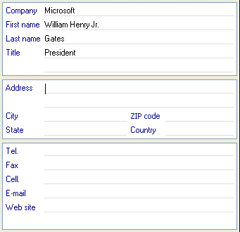

Tweet
Tweet
So far, we know how to recognize full pages with a scanner and an OCR package, and we know how to convert business cards into address records. The pen scanners we mentioned a few times are a completely different OCR application.
Pen scanners are designed to directly enter printed (or typed) text from magazines, newspapers, catalogues, brochures, letters, memos etc. into any Windows or macOS application.
The user loads the pen scanner software in the background where it stays resident. When he wants to enter some text, he simply slides the pen-sized scanner over the text line. The scanned image is transmitted to the computer: the OCR software recognizes the characters and inserts the recognized text in the active Windows or macOS application at the cursor position.
 
All this is done instantaneously, with unprecedented speed: on any recent computer, it takes no more than a fraction of a second for the text to appear on your screen!
In other words, pen scanners are not appropriate to capture entire documents or complete pages of text, but they capture text snippets very efficiently. OCR packages are designed to read large volumes of text, pen scanners are optimized tools that read small bits of text — instantaneously and in any application.
You may be under the impression that there’s no huge need for such a tool. Or you feel that pen scanners are nothing more than a small but portable OCR solution, a cheap but inefficient version of the traditional pair scanner plus OCR software. Well, you’re wrong. I’ll discuss some typical applications that benefit so obviously from the use of a pen scanner, and I’ll show how the unbeaten versatility of a pen scanner can make all the difference in the world!
Pen scanners are good at very specific and advanced applications that standard OCR software won’t handle. They can for instance be used by bank tellers to encode the codelines on checks automatically. (Remember what we said about the banking fonts OCR-A, OCR-B, E13B and CMC-7?)
The obvious applications are: entering data (addresses etc.) in a database, entering figures in spreadsheets, entering small text portions in word processors (think of students in a library), entering text and figures in data administration software, reading numbers on forms and ID cards, journalists highlighting relevant excerpts from press releases etc.
The list of supported applications is really endless! That’s because pen scanners really work with any Windows and macOS application. Wherever your text cursor blinks in a Windows or macOS application, the pen scanner can insert characters. Basically, the pen scanner establishes a “copy and paste” operation: it copies the text from your paper document to your Windows and macOS application.
Imagine you have to write a report. Your pen scanner copies excerpts from books, magazines, newspapers and typed or printed matter, and enters them directly in your word processor at the cursor position.
And where’s the benefit compared to an OCR package? If you have to enter small portions of text into a word processor, a pen scanner is your ideal partner. Even a traditional OCR solution is no competition when it comes to scanning excerpts and abstracts. To read a few lines of text, you’d have to scan an entire page with your flatbed scanner, draw a frame around the text snippet to be recognized, wait until the recognition is executed, then transfer the text result to your word processor…
Pen scanners on the other hand offers real-time recognition. Slide your pen over your text and in less than a second, it appears on your screen. Now that’s text recognition at your fingertips!
Mind you, this does not only mean that you can automatically enter text in your word processor, say, in a Microsoft Word document. You can also enter text or figures in for instance your address book, in text editors such as WordPad (Windows) and TextEdit (macOS), in database fields (think Microsoft Access, FileMaker, Sage Act! etc.), in book-keeping software and of course in popular applications such as the spreadsheet Microsoft Excel.
Let’s have a closer look at the way one uses pen scanners with spreadsheets. What’s the unique angle here? Pen scanners are capable of entering numbers faster and more accurately than any human being can. Think of scanning serial numbers on labels, on forms etc. Entering serial numbers of up to 30 characters takes about 2 seconds. It’s a text book example of “machine beats man”!
With a flatbed scanner, you’d never consider using OCR because it isn’t worth the bother to recapture some 30 characters. And entering the number manually would take you, say, between 30 and 45 seconds. Or even more: in high-accuracy contexts, such numbers get entered twice, once from left to right and a second time from right to left. (This method is called “double data entry”.) Here’s an example where a pen scanner is your only chance of avoiding laborious and error-prone manual entry.
And oh — now that we mention serial numbers: the agility of a pen scanner is such that you can scan text from the corners of books, from bottles etc., very much like you use a bar code reader. Again, this kind of flexibility cannot be obtained with a flatbed scanner, not to speak of sheetfed scanners that only cope with separate pages. As soon as you have to scan text from physical, non-flat objects, pen scanners offer a unique solution. Pen scanners are a “3D” OCR product, you might say…
Here’s another tip: pen scanners can filter and complete the recognized text for you, which no “traditional” OCR package will ever do. For instance, you encode price lists where you eliminiate the currency from the figures you recognize. You’ll ignore the “$” symbol, because you want to enter some numeric data in a spreadsheet. The figures are relevant, the currency isn’t. Scan “$2.99” and “2.99” gets entered in the worksheet. To do the same thing with a text generated by an OCR package, you’d have to develop a macro and run it on the recognized text. There’s an extra step required in any case…
So, how about databases? With a pen scanner, the cursor repositions itself in the next field, ready for the next scan. Imagine you want to add addresses to your contact manager. You scan the company name, the pen scanner puts the company in the corresponding field and relocates the cursor in the name field. You can go on with the person’s name, his title, the address, telephone and fax number etc. without having to reposition the cursor each time using the keyboard or mouse.

Here again, a “standard” OCR package falls short of this task as it does not allow you to insert data directly in a database field. You’d have to generate a structured text file which you import into your database later on. And who’s going to bother with that when you’ve only got a few addresses to enter?
Encode last minute data from the stock exchange into your notebook before you have that brainstorm with your director. And why not enter your appointments in your office software automatically? Rule the pen scanner over your visitor’s business card to put him in your personal organizer. Or fix that meeting right away in your electronic agenda.
Entering checks, invoices, bank statements etc. is a cinch: the pen scanner copies your numeric data directly into your database, spreadsheet and book-keeping software.
The key to the “universality” of pen scanners is their keyboard emulation. A pen scanner effectively replaces your keyboard by imitating keyboard strokes as soon as the application runs in the background, so you can use this tool to insert text wherever you have a text cursor on your Windows PC or Macintosh computer.
Some pen scanners even read bar codes and handprinted data. Why would you bother install a bar code reader on your computer when you’ve already got a pen scanner connected? Reading handprinting is useful to enter handwritten serial numbers, dates etc.